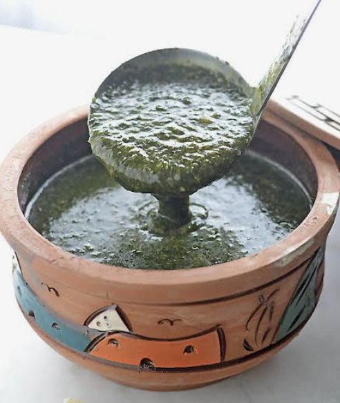

Cairo
A thousand minarets and a city that never sleeps

A thousand stories. One destination.
From the pyramids at sunset to a felucca on the Nile: plan a trip that feels like yours.
Where to go
From ancient wonders to quiet oases. Six places to start with.
A thousand minarets and a city that never sleeps

The last standing wonder of the ancient world

The world's greatest open-air museum

The slow, golden heart of the Nile

Egypt's Mediterranean muse

Salt lakes, date palms and silence
More than monuments
Egypt is the hush of a Nubian village at sunset, the clatter of a Cairo ahwa, a whale skeleton in the desert, a reef so bright it looks unreal.
This guide is for first-time visitors. It shows you where to go, what to eat and how to move around with confidence. Every place comes with a story, so you know what you are looking at when you get there.
Taste Egypt
Street food and home cooking you will find all over the country.

كشري
Egypt's national comfort food: layers of rice, lentils and pasta topped with spiced tomato sauce, chickpeas and crispy onions.

فول مدمس
Slow-cooked fava beans mashed with olive oil, cumin and lemon, eaten with baladi bread for breakfast.

طعمية
Egyptian falafel, made with fava beans instead of chickpeas, so it is green and fluffy inside.

ملوخية
A silky green soup of finely chopped jute leaves with a garlic and coriander finish, served with rice or bread.